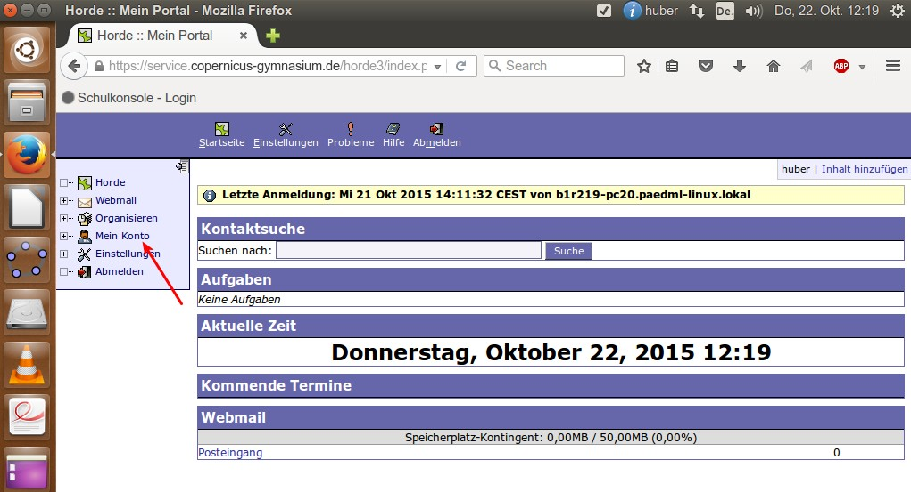

Zugriff auf die Schuldateien von zuhause Horde¶
Wenn Sie von zuhause auf ihre Daten in der Schule zugreifen möchten, steht Ihnen die Groupware Horde3 zur Verfügung. Diese Webanwendung bietet Ihnen auch die Möglichkeit, Ihre Termin zu verwalten oder Mails zu schreiben (Emailfunktionalität ist aber deaktiviert). Da wir seit Kurzem über eine eigene Cloudlösung verfügen, dürfte diese Variante in Zukunft an Attraktivität verlieren. Sollten Sie aber Dateien haben, die auf dem Schulserver gespeichert sind (Home_auf_Server) und nicht in Owncloud, dann müssen Sie auf diese Variante zurückgreifen.
Anmeldung¶
Öffnen Sie einen Browser und geben Sie folgende Url ein: https://service.copernicus-gymnasium.de/horde3

Es erscheint die Login-Seite von Horde. Hier melden Sie sich mit ihren gewohnten Zugangsdaten an und klicken auf „Anmelden“.
Die Startseite¶
Sie werden auf die Startseite von Horde weitergeleitet.
Das Menu auf der linken Seite bietet Ihnen verschiedene Auswahlmöglichkeiten. Um auf die Daten zuzugreifen, die sie auf ihrem Account in der Schule gespeichert haben, klicken Sie auf „Mein Konto“. Es erscheint eine weitgehend leere Seite, die einen weiteren Button mit der Beschriftung „Anmelden“ zeigt. Klicken Sie einfach auf diesen Button.

Auf der folgenden Seite sehen Sie einen Überblick über alle Dateien, die sich auf ihrem „Home_auf_Server“-Laufwerk befinden. Es sind vielmehr als Ihnen bewusst ist, aber die meisten davon können Sie einfach ignorieren. Bitte löschen Sie keine Dateien, von denen Sie nicht wissen, was sie zu bedeuten haben. Löschen Sie nur Dateien, die Sie selbst angelegt haben. Ein fahrlässiges Löschen der falschen Daten oder Dateien kann zu schwerwiegenden Fehlern und zum Verlust ihrer übrigen Daten führen!

Finden sie hier den Ordner „Eigene Dateien“ noch nicht, scrollen Sie nach unten zum Ende der Seite.

Klicken Sie auf „Weiter“, um zu dem Ordner „Eigene Dateien“ zu gelangen. Meist findet sich dieser bereits schon auf der nächsten Seite (1.). In dem Überblick über ihre Dateien haben Sie mehrere Möglichkeiten:

- Sie können Dateien auf ihrem Rechner speichern (2.).
- Sie können aber auch Dateien von ihrem Rechner auf ihr Home_auf_Server-Verzeichnis in der Schule hochladen (3.).